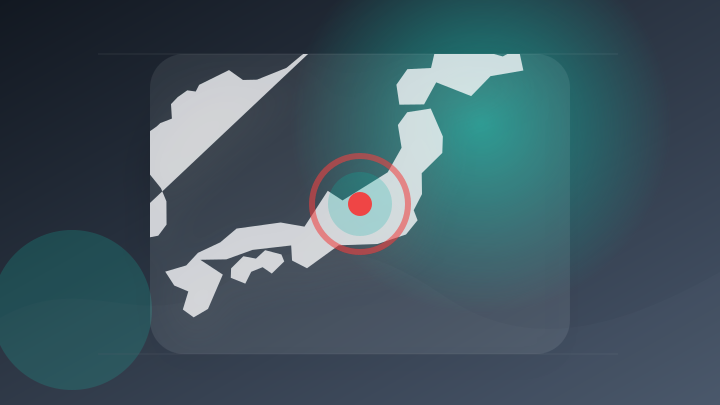
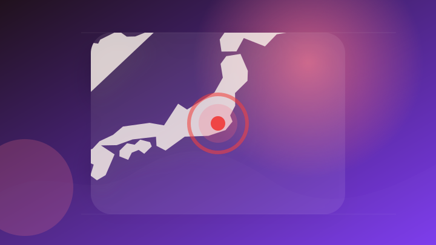
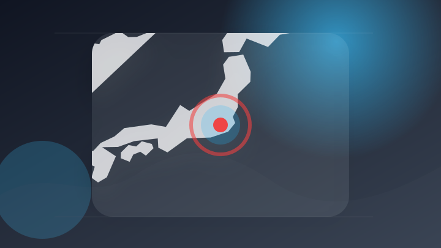
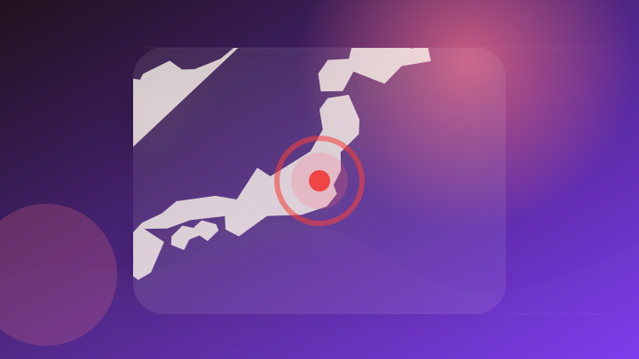
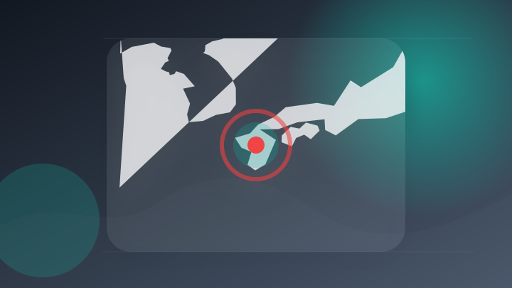
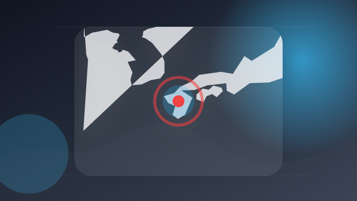

AI
5 topics
株式会社エクスプラザ、OpenAI Partner Network の「OpenAI Select Partner」に認定
株式会社エクスプラザ、OpenAI Partner Network の「OpenAI Select Partner…
注目ポイント注目度 61点
OpenAIの高級インフルエンサートリップに批判殺到
注目ポイント注目度 61点
【Claude Fable 5】AIコーディングベンチマークで首位に浮上、成功率64%でライバルを圧倒
注目ポイント注目度 61点
OpenAIの次世代モデル「Astra」が数学の未解決問題10件を解決（PC Watch）
注目ポイント注目度 61点
生成AI活用を組織のチカラに！株式会社トレンドタウン、生成AI特化型eラーニングサービス「トレンドAIアカデミア」を本日より提供開始！
生成AI活用を組織のチカラに！株式会社トレンドタウン、生成AI特化型eラーニングサービス「トレンドAIアカデミア」…
注目ポイント注目度 61点
IT業界
5 topics
「ウェザーニュース for business」GoogleのAI予測を追加し台風予測を強化
注目ポイント注目度 70点
「人主導」から「自律実行」へ――進化する「Microsoft 365 Copilot」の新機能とエージェントAIの現在地（ITmedia PC USER）
「人主導」から「自律実行」へ――進化する「Microsoft 365 Copilot」の新機能とエージェントAIの…
注目ポイント独立2媒体｜注目度 66点
竜殺しの英雄と戦乙女の悲恋。Appleが『ニーベルングの指輪』全15時間4万5000語のリスニングガイド公開 Apple Music Classicalで曲と同期（テクノエッジ）
竜殺しの英雄と戦乙女の悲恋。Appleが『ニーベルングの指輪』全15時間4万5000語のリスニングガイド公開 Ap…
注目ポイント注目度 61点
GMOサイバーセキュリティ byイエラエ、 地方公共団体向けサイバー侵入テストを提供開始
GMOインターネットグル…
注目ポイント注目度 61点
デスクトップ操作を記録してAIのスキル・自動化を生成。Microsoft、「Skill Recorder」を公開 (窓の杜)
デスクトップ操作を記録してAIのスキル・自動化を生成。Microsoft、「Skill Recorder」を公開…
注目ポイント注目度 61点
政治
6 topics
政府非常災害対策本部会議（第6回）（令和8年8月4日）
注目ポイント注目度 100点
FRBの「政治家」ウォーシュ氏、信認早くも揺らぐ 利上げ派の影の議長台頭も
注目ポイント注目度 70点
消費減税 臨時国会に法案提出意向
注目ポイント注目度 67点
令和8年8月4日（火）午前
注目ポイント注目度 65点
「村会議員は特別ではない」20年ぶり選挙戦につながった中川村民や議会の活動
注目ポイント注目度 64点

長野県知事選挙立候補・武田良介さん陣営のワゴン車が電柱に衝突 県議ら3人重傷
注目ポイント注目度 64点
社会
5 topics

東京オリンピック出場の元重量挙げ日本代表選手逮捕 コンビニで万引きし店長をケガさせたか-警視庁
東京オリンピック出場の元重量挙げ日本代表選手逮捕 コンビニで万引きし店長をケガさせたか
注目ポイント注目度 70点
高1男子が溺れ死亡した水難事故 地元の人も指摘する“危険な流れ” 河口付近に潜む危険性とは 新潟・村上市
注目ポイント注目度 70点
高1男子生徒の両手足をテープで縛り、顔や頭を殴る 逮捕監禁などの疑いで17歳少年逮捕 神戸|事件・事故
注目ポイント注目度 67点
ロアッソ熊本の育成年代の元コーチ逮捕 男子生徒に不同意わいせつか 熊本・阿蘇署
注目ポイント注目度 67点
最高裁判決を踏まえた保護費等の追加給付について
注目ポイント注目度 61点
事件・事故
6 topics
【速報】新築住宅工事現場で作業員2人死亡 感電が原因か 消防 兵庫・姫路市
注目ポイント注目度 70点
【速報】16歳女子高校生がシャープペンで首を刺される―刺した41歳無職男を殺人未遂容疑で現行犯逮捕―店舗内で突然襲う〈北海道函館市〉
【速報】16歳女子高校生がシャープペンで首を刺される―刺した41歳無職男を殺人未遂容疑で現行犯逮捕―店舗内で突然襲…
注目ポイント注目度 67点
恋人装い1800万円騙し取った男、警察は「連絡不通」で捜査中断…韓国・検察の突っ込みで即逮捕
注目ポイント注目度 67点

重量挙げ東京五輪代表を逮捕 山本俊樹容疑者、強盗致傷疑い
注目ポイント注目度 67点
無免許運転で事故、容疑で多久市の25歳女逮捕 対向車の女性に4週間のけが
注目ポイント注目度 67点
住宅の建築現場で男性作業員2人死亡 何らかの原因で感電か 姫路|事件・事故
注目ポイント注目度 67点
芸能人の結婚・離婚・交際
2 topics
災害
5 topics

令和８年熊本地震非常災害対策本部会議
注目ポイント注目度 100点
令和８年度 直轄道路災害復旧事業費に関する事業計画通知（令和８年８月４日付）
注目ポイント注目度 71点
熊本地震 7日にも「激甚災害」指定を閣議決定へ調整 政府
注目ポイント注目度 70点

令和７・８年度栃木県地震被害想定調査について
注目ポイント注目度 67点

令和8年熊本地震に関する支援情報
注目ポイント注目度 67点
ゲーム
5 topics

ソニー決算から読み解く現在地。熊本地震からタムロン買収提案、PlayStationディスク廃止まで
注目ポイント注目度 67点
『Grizzy and the Lemmings – Crazy Party』、8月7日（金）にPlayStation 5、Xbox Series X|S、PCで配信開始
『Grizzy and the Lemmings – Crazy Party』、8月7日（金）にPlayStati…
注目ポイント注目度 61点
『ファイナルファンタジーXIV』Nintendo Switch 2 版 本日発売！
Square Enix, Lt…
注目ポイント注目度 61点
PlayStationの新作ディスク生産が2028年1月で終了｜PS6世代の中古ゲーム市場はどうなる？
PlayStationの新作ディスク生産が2028年1月で終了
注目ポイント注目度 61点
ファイアーエムブレム 万紫千紅 Direct 2026.8.4 | 任天堂
ファイアーエムブレム 万紫千紅 Direct 2026.8.4
注目ポイント注目度 60点